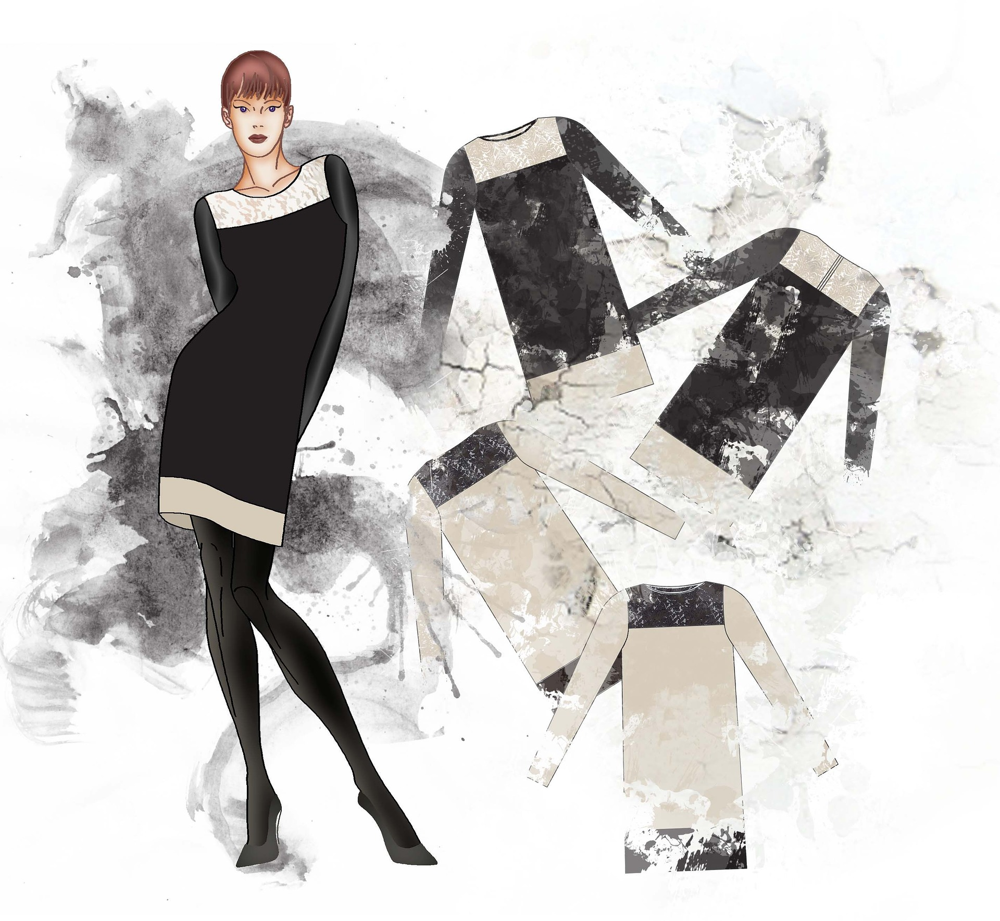

Что такое цифровой лук?
Цифровой лук — это одежда, созданная в специальных 3D-приложениях, которая переносится на ваше фото. В реальности ее нет. В двух словах все работает так: вы выбираете digital вещь из галереи, присылаете нам свою фотографию и вскоре получаете ту же фото, но на ней вы уже в футуристическом гарменте, который выбрали. Выглядит он, как настоящий, но далее у вас может возникнуть вопрос…
"Зачем мне это?"
Это новый опыт самовосприятия и взаимодействия с окружающим миром и людьми. Возможность показать свой внутренний мир без ущерба для экологии. Иногда возникают сомнения: как можно платить реальные деньги за виртуальные вещи. Но это такой же чувственный опыт, как аренда фильма в iTunes, чтение, музыка, поход в театр или арт-галерею и так далее. Одна из главных функций одежды — социальная. Ваш образ — это всегда определенный стейтмент, демонстрация настроения, вкуса, интересов и восприятие себя в этом облаке смыслов. И виртуальная одежда здесь может пойти гораздо дальше, чем физическая.
Как примерить диджитал лук
Чтобы примерить цифровой лук, вам нужно загрузить свою фотографию — ту, на которой вы хотите перевоплотиться в новом образе.
Фотография должна быть высокого качества и сделана при хорошем освещении. На ней вы можете быть запечатлены в полный рост или в какой-то другой позе. Желательно, чтобы на вас была обтягивающая одежда — так будет легче примерить цифровой лук. Но жестких требований нет, если что-то пойдет не так, мы свяжемся с вами, чтобы решить все вопросы.
Выбрать диджитал лук


- PUMA Untigravity
- Alexander Terekhov
- TRBN x replicant
- ANICONIC
- isdkv
- ophelica
- KAI KAI
Условия выполнения заказа
Фото должно быть хорошего качества, не расплывчатое, четкое, если фото не подойдет - мы попросим его
заменить. Если Вы напишите нам, мы можем помочь с выбором фотографии!
Срок изготовления одной цифровой модели 1-2 дня, всей коллекции 5-6 дней!
Предоплата 100%, Вы получаете на почту электронный чек покупки.
Для заказа доступны все текущие, прошлые и новые коллекции!
-
1 Выбираем лук.
Сначала в диджитал-ателье нужно выбрать свой цифровой лук. -
2 Загружаем фото и оплачиваем.
Понравившийся лук нужно добавить в корзину, потом загрузить свою фотографию и оплатить покупку. -
3 И все.
Не позднее чем через 48 часов вы получите свою фотографию, на которой вы будете в новом digital луке.